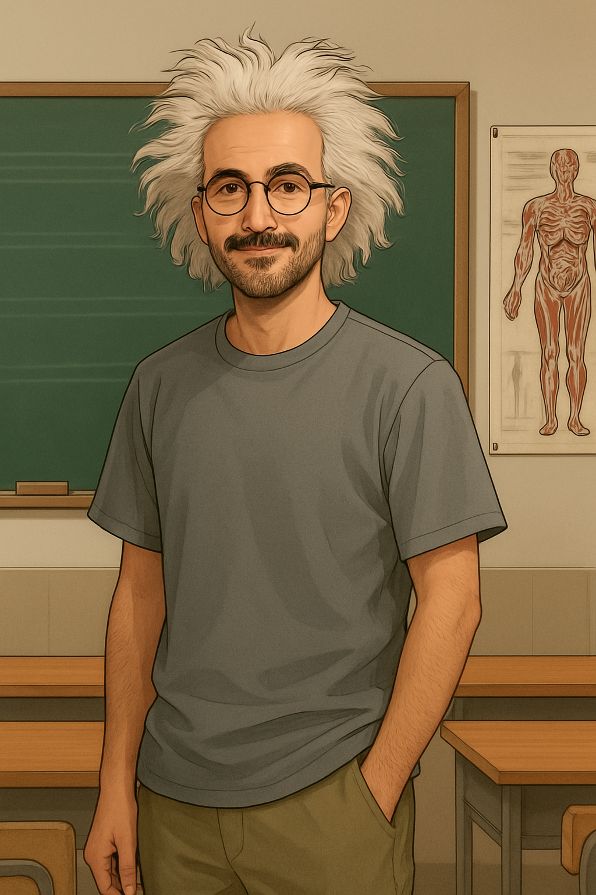

Bedel Ödeme Yerine Ders Alma Özelliği Getirildi

Gece telefonda konuşurken söylediklerinde haklıydın. Sana yaşattığım şeyler için bedel ödemem değil dersimi almam gerekiyor. O anın üzüntüsüyle kendime acı çektirmek istiyordum, evinin önünde sabaha kadar yatmaya hazır hissediyordum ama şu an bu olaydan ders çıkarmam gerektiğini anlıyorum. Ben o gün dünyamda en çok değer verdiğim insanı kaybettim. Bunun üzerine özellikle yoğunlaşıyorum ki bana bir şans daha verdiğin senaryoda bir daha asla seni kaybetmek istemiyorum.
---
12 Nisan 2025
Bu konuda çıkardığım dersi uygulamanın en zor olduğu günlerden biriydi. Dilara'nın doğum günü kutlamasına Sabit 1.0 gitmezdi. Çünkü acı çekmesi ve yalnız kalması gerektiğini düşünürdü. Seni görmeye bile hakkı olmadığını düşünürdü. Bu kararı vermek yine de zor oldu. Gelmem gerektiğini bildiğim halde seninle aynı ortamda bulunacak olma fikri bile stresten kalbimi patlatıyordu. Geç geldin ve sen gelene kadar her dakika kalksam mı diye düşündüm. Bana en son benden nefret ettiğini söylediğin için beni görmek istemeyeceğini düşünüyordum ve bunun ikimiz için de zor olabileceğini düşünüyordum. Oradayken seni sürekli izlemek istiyordum, sürekli anlattıklarını dinlemek, her sigaraya çıktığında gelmek, yanında oturabilmek, ne kadar güzel olduğunu söyleyip öpebilmek… çok güzeldin. İyi ki erkenden kalkmamışım çünkü tüm gece boyunca senin hayatında tekrardan olabilmem için her şeyi yapmam gerektiğini çok daha net hissettim.